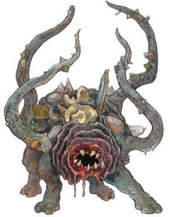

超大型异怪 (土系)

| 生命骰： | 20d8+160 (250 hp) |
| 先攻： | +11 |
| 速度： | 60 英尺，掘地 60 英尺，攀爬 60 英尺 |
| 防御等级： | 39 (�C2 体型，+7 敏捷，+24 天生)，接触 15，措手不及 32 |
| 基本攻击／擒抱： | +15/+32 |
| 攻击： | 触手 +22 近战 |
| 全力攻击： | 4 触手 +22 近战 和 啮咬 +20 近战 |
| 伤害： | 触手 2d6+9，啮咬 2d8+4 |
| 面宽／触及： | 15 英尺/15 英尺（20 英尺 用触手） |
| 特殊攻击： | 紧勒，灵界冲荡，精通攫抓，类法术能力 |
| 特殊能力： | 黑暗视觉 60 英尺，伤害减免15/魔法精金，完美攀爬，法术抗力 37，震颤感知 60 英尺，索尔石怪移动 |
| 豁免： | 强韧 +14，反射 +13，意志 +17 |
| 属性： | 力量 29，敏捷 25，体质 27，智力 16，感知 16，魅力 18 |
| 技能： | 专注 +25，躲藏 +13，跳跃 +16，聆听 +23，潜行 +13，侦察 +22 |
| 专长： | 战斗反射，闪避，精通先攻，钢铁意志，灵活移动，多重攻击，跳跃攻击 |
| 地域： | 地下 |
| 组织： | 单独 |
| 挑战等级： | 17 |
| 宝物： | ― |
| 阵营： | 总是中立邪恶 |
| 进化： | 21�C40 HD（巨型）；41�C60 HD（超巨型） |
作为幽暗地域最危险的恐怖存在之一，摩葛斯是岩石的孤傲主宰。它们能在任何石质物质之上或之中快速移动。这种高度的机动性使摩葛斯能在极为罕见地发现自身处于劣势时，通过坚实的岩石遁逃。
摩葛斯看起来像是血肉与石头可怕的混合体。其主体形似一只巨大畸形的犀牛，生有四条强壮的腿和四条触手。它灰绿色的身躯覆盖着岩石状的尖刺和凸起，其外皮摸上去如同岩石，除非是最有经验的手也无法辨别。
尽管摩葛斯展现出的掌控自然的力量类似德鲁伊，它们却丝毫不具备大多数德鲁伊所共有的对环境的珍爱。它们冷酷地利用自然世界作为第一道防线，控制动植物来满足自己的需求。
摩葛斯会说地底通用语和土族语。
摩葛斯是凶猛而富有创造力的战斗者，它们狩猎广阔的洞穴区域，只听从自己的一时兴起。摩葛斯酷爱伏击战，它们能随意出入实心岩石的能力，使得它们甚至能对抗强大的敌群也能成功进行打了就跑的游击战斗。
面对危险的群体时，摩葛斯通常会使用其跳跃攻击专长和灵界冲荡能力，迫使部分敌人进入灵界位面。一旦以此方式削弱了对手，摩葛斯便会在主战区的中心现身，试图将所有剩余的敌人置于其强力触手的打击范围之内。
紧勒 (Constrict) (Ex)：通过一次成功的擒抱检定，摩葛斯可以紧勒一个被擒抱的对手，造成 3d6+3 点钝击伤害。
灵界冲荡 (Ethereal Jolt) (Ex)：以一个标准动作，摩葛斯可以尝试将一个对手强行送入灵界位面。摩葛斯用其中一条触手进行一次接触攻击，如果攻击命中，被击中的生物必须进行一次强韧豁免（DC 29）以避免被强行送入灵界位面。
精通攫抓 (Improved Grab) (Ex)：如果摩葛斯用触手攻击命中一个体型至少比它小一级的对手，它在造成正常伤害的同时，能以一个不会引发借机攻击的自由动作尝试开始擒抱（擒抱加值 +32）。如果擒抱成立，它还会在同一轮进行紧勒。此后，摩葛斯可以选择正常进行擒抱，或仅用其触手来钳制对手（擒抱检定承受�C20减值，但摩葛斯不被视为被擒抱）。无论哪种情况，它在后续轮中每次成功的擒抱检定都会自动造成触手伤害。
类法术能力 (Spell-Like Abilities)：随意施放――安抚动物（calm animals），操控植物（control plants），治疗轻伤（cure light wounds），支配动物（dominate animal），柔石术（soften earth and stone），石言术（stone tell），化泥为石（transmute mud to rock），化石为泥（transmute rock to mud）；每日五次――治疗重伤（cure serious wounds），真知术（true seeing），石墙术（wall of stone）。这些能力如同 13 级德鲁伊所施放的法术（豁免 DC 14 + 法术等级）。
完美攀爬 (Perfect Climbing) (Ex)：摩葛斯在攀爬时行动自如。它可以全速穿越天花板、悬岩以及其他倾斜或垂直的表面而无需进行攀爬检定，并且在受到伤害时也不必进行攀爬检定来避免失手坠落。
震颤感知 (Tremorsense) (Ex)：摩葛斯能自动感知到 60 英尺内任何与地面接触之物的位置。
索尔石怪移动 (Xorn Movement) (Ex)：摩葛斯可以在岩石、泥土或几乎任何其他除金属外的土壤中穿行，如同鱼儿在水中游动一样容易。它的掘地不会留下任何隧道或孔洞，也不会产生任何涟漪或其他显示其存在的迹象。一个施放在包含掘地中摩葛斯区域内的地动术（move earth）会将摩葛斯向后推出 30 英尺，但除此以外没有其他效果。